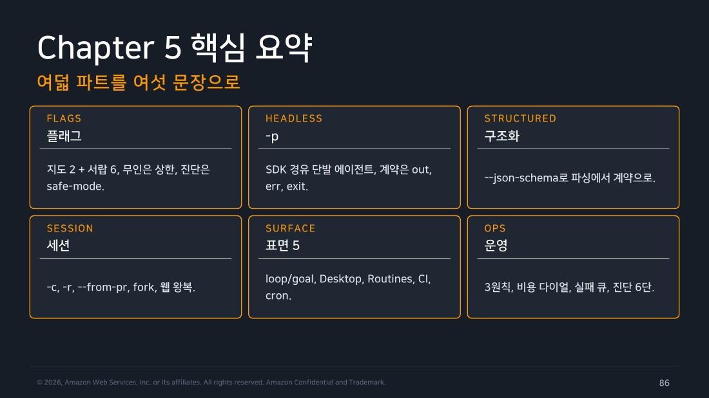
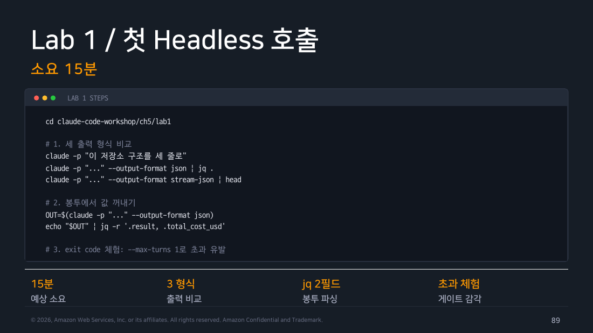
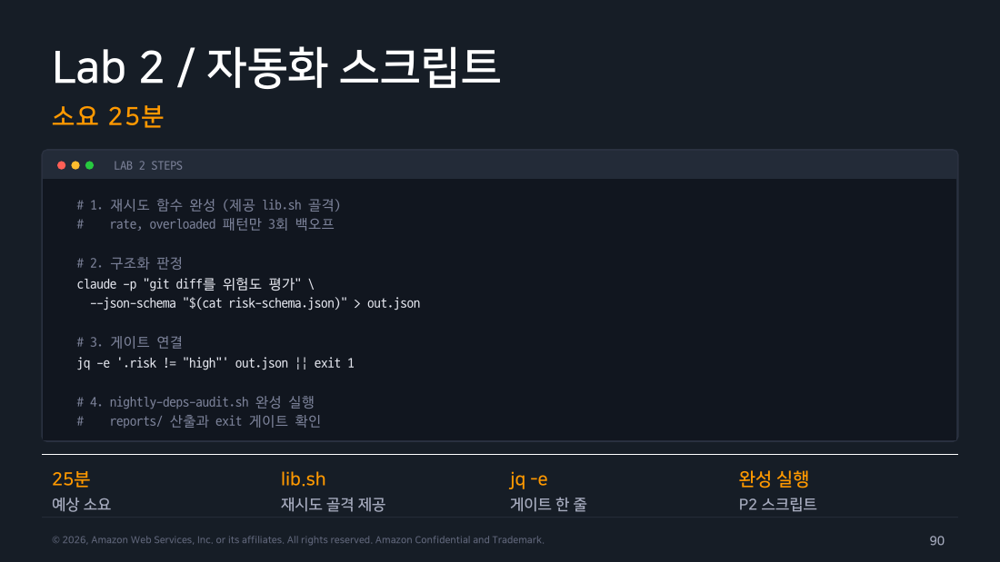
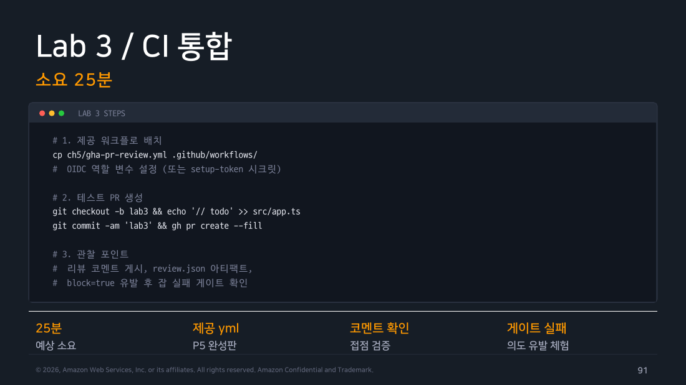
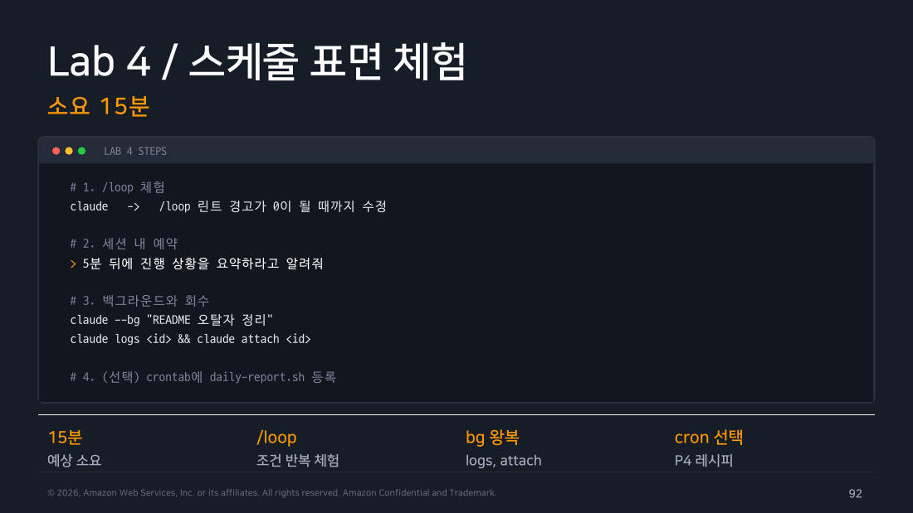

Part 8 — Recap과 Labs¶
한 줄 요약¶
이 챕터의 실무 순서는 도움말 실측 → 작은 JSON 호출 → 세션·비용·정책 게이트 → CI와 운영 자동화입니다.
왜 알아야 하나¶
CLI를 한 번 실행해 보는 일과 운영 가능한 자동화를 만드는 일은 다릅니다. 한 번 성공한 명령은 그 한 번의 성공만 증명합니다. 그래서 이 마지막 파트에는 성공한 결과뿐 아니라 랩을 진행하며 실제로 막힌 지점과 고친 방법도 함께 남겼습니다. 뒤에서 같은 자동화를 만드는 사람이 같은 곳에서 시간을 쓰지 않게 하려는 기록입니다.
처음 읽는다면 Lab을 모두 수행할 필요는 없습니다. 아래 순서로 진행하면 됩니다.
| 순서 | 지금 할 일 | 성공 판정 | 범위 |
|---|---|---|---|
| 1 | 대화형 실행 1회 → -p 1회 |
답변이 보이고 명령이 끝남 | 필수 |
| 2 | 일반 출력과 JSON 비교 | result와 is_error를 함께 확인 |
필수 |
| 3 | is_error와 severity 하나로 분기 |
통과 또는 non-zero 종료를 확인 | 필수 |
| 4 | session_id로 재개 |
이전 맥락이 이어짐 | 권장 |
| 5 | 로컬 리뷰 게이트 | raw JSON과 종료 상태가 남음 | 권장 |
| 6 | CI, cron/Routines, --bg, 외부 게시·자동 수정 |
실행 주체·시점·영향을 설명 가능 | 심화 |
중단 기준: 비밀값이 필요한 CI, 실제 저장소에 댓글을 다는 흐름, 파일을 자동 수정하는 흐름은 이 문서의 원본 실습 기록으로만 먼저 읽습니다. 로컬의 읽기 전용 JSON 게이트가 확인되기 전에는 복사해 실행하지 않습니다.
1. 챕터 전체를 자동화 하나로 되짚기¶
이 챕터의 내용을 한 번에 떠올리려면 PR마다 자동 리뷰를 붙이는 과정에서 네 번 막히는 장면을 순서대로 따라가 보면 됩니다.
처음에는 실행 자체에서 막힙니다. 교재에서 본 플래그 조합을 스크립트에 옮겼는데 실행이 거부될 수 있습니다. 이때 기준은 교재가 아니라 지금 이 머신의 claude --help입니다. 플래그는 문서보다 빨리 추가되거나 폐기되므로, 자동화는 실측한 도움말을 기준으로 삼아야 합니다.
두 번째는 결과를 읽는 방식입니다. 텍스트 출력만 받으면 모델이 리뷰를 마친 것인지, 도중에 실패해 사과 문장을 돌려준 것인지 셸이 구분하지 못합니다. -p에 --output-format json을 붙이면 답변은 봉투처럼 감싼 JSON으로 옵니다. 여기에는 답변 본문뿐 아니라 성공 여부, 비용, 세션 ID도 들어 있습니다. 자동화는 답변 문장보다 이 JSON을 판정에 씁니다.
세 번째는 작업이 길어질 때입니다. 리뷰를 백그라운드로 돌리기 시작하면, "지금 무엇이 실행 중인가"를 사람의 기억이 아니라 조회 가능한 값으로 확인해야 합니다. 세션과 background 작업에는 각각 ID가 있습니다. 이 ID로 목록 조회·로그 확인·중지를 이어갈 수 있습니다.
네 번째는 CI에 올린 뒤입니다. 이제 내가 만들지 않은 PR에서도 같은 스크립트가 실행됩니다. 도구를 읽기 전용으로 제한하고, 비용과 턴 수에 상한을 걸고, 출력 형태를 schema로 고정한 뒤, 정책 게이트가 그 값을 기계적으로 판정하게 합니다. 이 장치가 갖춰져야 자동화로 운영할 수 있습니다.

▲ 교재 슬라이드 86 — Chapter 5 핵심 요약
2. Lab 1 — 헤드리스 다섯 패턴¶
이 랩의 목적은 헤드리스 호출을 "한 번 돌려 봤다"에서 "스크립트에 넣어도 되겠다"까지 옮기는 것이었습니다. 그러려면 같은 저장소에서 출력 형식·세션 재개·구조화 출력·상한을 차례로 확인해야 합니다.
초급자용 최소 과정에서는 다섯 패턴을 한 번에 다루지 않습니다. 일반 출력 1회, JSON 출력 1회, is_error 확인 1회만 먼저 합니다. stdin·stream-json·schema·상한은 이 세 결과를 이해한 뒤에 살펴봅니다.
그래서 먼저 격리 저장소를 만들고 두 커밋을 준비했습니다. 실제 Git 로그는 다음과 같습니다.
이 저장소에서 단순 text, --output-format json, stream-json, stdin pipe, 비용 추출, --resume과 --fork-session, --json-schema, --max-turns 초과를 모두 실행했습니다.
막힌 지점은 셋이었습니다. stream-json은 -p와 함께 쓸 때 --verbose를 추가로 요구했고, --json-schema는 파일 경로가 아니라 JSON 문자열을 받았습니다. 또 v2.1.251 / 2026-08-29 실측에서 --max-turns 1인데 봉투의 num_turns는 2로 찍혔습니다.
셋 모두 도움말 한 줄만 읽고 넘겼다면 CI에서 처음 마주쳤을 차이입니다. 자동화에 넣을 조합은 반드시 로컬에서 먼저 한 번씩 실행하고, 그때의 출력을 기록해 둡니다.
원본 출력은 각 파트의 "직접 해보기"에 나눠 실었습니다. 세 출력 형식과 스키마·상한은 Part 2, 세션 재개와 분기는 Part 3, 결과 JSON 집계는 Part 6에 있습니다.

▲ 교재 슬라이드 89 — Lab 1
3. Lab 2 — 로컬 리뷰 봇¶
이 랩의 목적은 셸이 모델의 리뷰 결과를 문장 해석 없이 판정하게 만드는 것이었습니다. 사람이 읽고 판단해야 하는 리뷰라면 굳이 자동화할 이유가 없습니다.
여기서 표준 입력(stdin)은 git diff가 만든 텍스트를 다음 명령으로 전달하는 통로입니다. | 왼쪽의 diff가 오른쪽 Claude 호출로 들어가며, 관찰할 결과는 raw.json 파일과 마지막 echo $?의 종료 코드입니다.
교재 설계대로 git diff HEAD~1..HEAD를 표준 입력으로 넘기고, --json-schema로 판정 구조를 고정한 뒤, CRITICAL이면 exit 1을 내는 스크립트를 실제로 실행했습니다. --tools로 가용 도구를 읽기 전용으로 제한하고, --allowed-tools로 그 도구 사용을 사전 승인했습니다. 두 종류의 상한도 함께 적용했습니다.
$ git diff HEAD~1..HEAD | claude -p '아래 diff를 리뷰해서 스키마대로 답해' \
--json-schema "$SCHEMA" --output-format json \
--tools "Read,Grep" --allowed-tools "Read,Grep" \
--max-turns 5 --max-budget-usd 0.50 \
--safe-mode > raw.json
$ jq -e '.is_error == false' raw.json > /dev/null
$ jq -r '.result' raw.json > review.json
$ jq -r '.severity' review.json
MAJOR
$ ./review.sh
severity=MAJOR cost=0.0424638
리뷰 게이트: 통과
$ echo $?
0
여기서 확인하지 못한 것이 하나 있습니다. 이번 샘플 diff는 MAJOR 판정이 나와 exit 1 차단 경로는 실제 모델 출력으로 실행해 보지 못했습니다. 차단 분기는 셸 문법상 동작하지만, 실제로 CRITICAL을 받은 기록은 없다는 뜻입니다.
jq -r '.result' raw.json으로 문자열을 꺼낸 뒤 jq -r '.severity'로 다시 파싱한 것도 최선은 아니었습니다. 봉투를 다시 보니 같은 값이 .structured_output.severity에 이미 파싱돼 있었습니다(Part 2 참고). 두 단계는 jq -r '.structured_output.severity' 한 줄로 줄일 수 있었습니다.
그래도 이 랩의 핵심은 확인했습니다. --json-schema 덕분에 severity 값은 열거형 안에서만 나오므로, 셸은 모델 문장을 해석하지 않고 문자열 비교 한 번으로 통과·차단을 정합니다. jq -e가 게이트 역할을 했다는 것이 그 증거입니다. 자동화에서는 모델에게 잘 설명하는 것보다, 모델이 낼 수 있는 값의 범위를 미리 좁히는 편이 중요합니다.

▲ 교재 슬라이드 90 — Lab 2
4. Lab 3 — CI 통합¶
이 랩의 목적은 로컬에서 통과한 게이트가 다른 사람이 작업하는 곳에서도 같은 판정을 내는지 확인하는 것이었습니다. 그래서 격리 실습이 아니라 이 정리를 발행하는 실제 private 저장소에 워크플로를 커밋하고 PR(#1)을 열어 실행했습니다.
이것은 심화 실측 기록입니다. 첫 CI 실습은 로컬 게이트를 별도 CI 러너에서 읽기 전용으로 실행하고 결과를 보관하는 데서 끝냅니다. 실제 PR, 시크릿, 댓글, 외부 게시, 자동 수정은 권한과 영향 범위가 커지는 다음 단계입니다.
이 실습에서는 claude setup-token으로 받은 토큰을 저장소 시크릿(CLAUDE_CODE_OAUTH_TOKEN)으로 등록했습니다. 이어서 checkout → diff 수집 → claude -p(--json-schema+--safe-mode) → jq -e 정책 게이트 → 아티팩트 업로드 순서로 구성했습니다. 실행 결과는 severity: MEDIUM으로 게이트를 통과했습니다. 이는 이 날짜의 CI 기록이며, setup-token의 세부 권한 모델을 일반화하지 않습니다.
실제 저장소를 썼기 때문에 몇 가지를 제한했습니다. 트리거는 PR 작성자가 본인 계정인지로 제한했고, 확인이 끝난 뒤 PR과 브랜치는 정리했습니다. 실제 토큰을 쓰는 워크플로를 처음 붙일 때는 누가 이 워크플로를 실행할 수 있는지 먼저 좁혀 두는 편이 안전합니다.
원본 로그는 Part 5에 그대로 남겼습니다.

▲ 교재 슬라이드 91 — Lab 3
5. Lab 4 — 스케줄·background¶
이 랩의 목적은 오래 걸리는 작업을 띄운 뒤 나중에 다시 찾아오는 과정을 실제로 확인하는 것이었습니다. 운영에서는 작업을 띄우는 것보다 나중에 어떻게 다시 찾을지가 더 중요합니다.
claude --bg로 작업을 띄우고 claude agents --json으로 조회한 뒤 claude logs로 출력을 보고 claude stop으로 정리하는 왕복을 실제로 돌렸습니다.
여기서는 예상과 달랐던 점이 둘 있었습니다. --bg와 -p는 서로 배타적이라 함께 쓸 수 없었고, v2.1.251 / 2026-08-29 실측에서 logs는 파싱 가능한 로그가 아니라 터미널 화면 덤프였습니다. 현행 문서는 recent output만 보장하므로 후자를 일반 계약으로 쓰지 않습니다.
대화형 전용 기능도 이 랩에서 함께 확인했습니다. /loop는 같은 프롬프트를 시간 간격으로 다시 실행하고, 만료 전 task는 --resume 또는 --continue로 복원할 수 있습니다. 이 실습에서는 tmux로 실제 대화형 세션을 열어 확인했습니다. 반면 /goal은 -p 한 번으로도 조건 판정까지 끝까지 실행된다는 것을 나중에 확인했습니다. 처음에는 둘 다 대화형이 필요할 것이라 짐작했지만 절반만 맞았습니다. Remote Control은 처음에 페어링 URL이 나타나지 않아 막혔지만, 이 환경에서 OAuth 환경변수를 지우고 /login으로 바꾸자 정상 동작했습니다. 공식 경계는 eligible claude.ai 로그인이 필요하고 API 키 인증은 지원하지 않는다는 점입니다. 이 랩에서는 될 법한 기능은 헤드리스로 먼저 확인하고, 안 되는 기능만 대화형으로 열어 확인했습니다.
원본 출력과 셋의 실측 차이는 Part 4에 정리했습니다.

▲ 교재 슬라이드 92 — Lab 4
Tip
현장 메모
남은 미완 목록은 실패 기록이 아니라 운영 준비 목록입니다. 한 번 성공한 뒤에도 실패·중단·재시도·비용 상한까지 같은 로그로 확인해야 합니다. 이번 랩 전체가 쓴 비용은 봉투의 total_cost_usd를 더해 확인할 수 있었습니다. 이 합계가 자동화 예산을 잡는 첫 근거가 됩니다.
직접 해보기¶
랩을 모두 실행한 뒤 마지막으로 교재가 다룬 플래그를 실측 도움말과 한 줄씩 대조했습니다. 새로 확인한 대표 항목은 다음과 같습니다.
$ claude --help
--bare Minimal mode: skip hooks, LSP, plugin
--bg, --background Start the session in the background
--fork-session When resuming, create a new session ID
--from-pr [value] Resume a session linked to a PR
--json-schema <schema> JSON Schema for structured output
--safe-mode Start with all customizations ... disabled
--teleport [session] Resume a teleport session
--tools <tools...> Specify the list of available tools
교재의 핵심 플래그 중 위 항목은 실측 도움말에 그대로 있었습니다. 5주차 전체를 관통하는 실습이므로 교재 표기와 실측 결과를 표로 정리합니다.
| 플래그 | 교재(2026.07) | 실측(v2.1.251) | 비고 |
|---|---|---|---|
--bare |
있음 | 동일 | 공식 문서: 향후 -p의 기본값이 될 예정 |
--safe-mode |
있음 | 동일 | CLAUDE_CODE_SAFE_MODE=1 설정 |
--from-pr |
있음 | 동일 | GitHub·GitLab·Bitbucket PR 번호/URL 또는 선택기 |
--teleport |
있음 | 동일 | 웹 세션을 로컬 터미널로 재개 |
--remote |
있음(웹 위임으로 소개) | 도움말엔 안 보임 | 삭제가 아니라 --cloud의 폐기된 숨은 별칭. Remote Control과는 별개 |
--remote-control |
교재는 --remote로 뭉뚱그림 |
--remote-control/--rc로 별도 확인 |
웹·모바일에서 세션을 원격 조작 |
--bg / --exec |
있음 | --bg는 도움말에 그대로 있음, --exec만 숨겨짐 |
-p와 --bg는 동시 사용 거부됨 |
--json-schema |
있음 | 동일 | 값은 파일 경로가 아니라 JSON 문자열 |
--max-turns |
있음 | 동일(도움말에서 숨겨짐, -p 전용) |
도움말 부재 ≠ 미지원의 예외 사례 |
--tools/--allowed-tools/--disallowed-tools |
있음 | 동일 | --tools는 가용 도구, allow/deny는 권한 규칙; 충돌 우선순위는 이 실측만으로 단정하지 않음 |
--restricted, --cloud, --fallback-model, --debug-file, --prompt-suggestions |
비중 있게 다루지 않음 | 도움말에 명시적으로 등장 | 이번 실측에서 새로 확인 |
"도움말에 없다"가 "지원하지 않는다"는 뜻은 아닙니다. --max-turns와 --exec는 도움말에서 숨겨져 있지만 공식 문서와 실제 실행에서 모두 살아 있었습니다. 반대로 --remote는 도움말에 없지만 완전히 사라진 것이 아니라 다른 이름 뒤에 숨어 있었습니다. 도움말 목록만으로 기계적으로 삭제·추가를 판단하지 말고, 보이지 않는 항목은 실제로 실행해 확인할 필요가 있습니다.
흔한 오해 바로잡기¶
"명령이 도움말에 있으면 그대로 쓰면 된다"는 오해가 있습니다. 이번 랩에서 막힌 지점은 모두 도움말과 실제 동작 사이의 차이였습니다. stream-json이 --verbose를 더 요구하고, --json-schema가 경로 대신 문자열을 받고, --bg가 -p와 충돌하는 사실은 플래그 목록만으로 알 수 없습니다. 자동화에 넣을 조합은 한 번씩 직접 실행해 종료 값을 확인한 뒤 스크립트로 옮깁니다.
정리¶
Claude CLI 자동화를 시작할 때는 입력을 신뢰할 수 있는지, 결과를 기계가 판정할 수 있는지, 실패·비용·중단을 누가 관측하는지 확인합니다. 이 점을 정한 뒤 프롬프트와 스케줄을 고릅니다.
CI를 실제 PR에 붙이는 일, /loop·/goal, Remote Control까지 이번에 모두 실측으로 확인했습니다. 5주차 실습 중 재현하지 못한 항목은 없었습니다. 다만 --teleport는 페어링된 세션을 반대 방향(웹→로컬)으로 불러오는 동작이라 별도로 다시 실행하지는 않았습니다.
출처¶
- Claude Code Deep Dive Workshop — Chapter 5 / Part 9: Recap & Labs (슬라이드 86~95)
- 공식 문서: CLI reference, headless mode